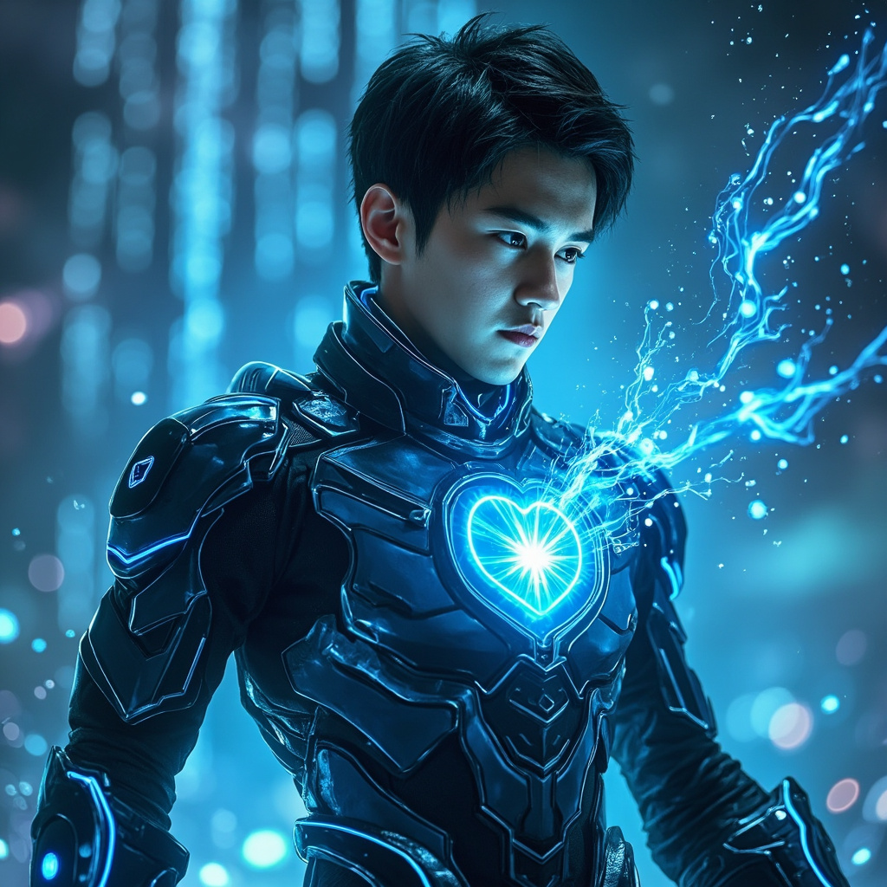

🎧 點擊播放有聲朗讀
林塵站在實驗室中央，周圍是十幾台伺服器組成的叢集，綠色的LED指示燈有節奏地閃爍著。全息投影中顯示著複雜的量子位元線路圖，每一條光路都代表著一個潛在的靈氣運算單元。這是靈芯系統的底層架構——用數據構築的修真基礎。
林塵的意識在數據海洋中暢遊，他看到了量子位元的疊加態與糾纏態如何映射到靈氣的陰陽變化。每一個量子位元都像是一個微型的太極圖，在0和1之間震蕩的同時，也展現著靈氣的虛實轉換。這種對應關係如此完美，以至於他不確定這究竟是量子力學的勝利，還是古代修真理論的正確性證明。
林塵將意識聚焦在一個關鍵的運算單元上，嘗試用純粹的意念引導量子位元的狀態轉換。奇蹟般地，那個位元真的響應了他的意識——從混沌的疊加態坍縮為確定的0或1狀態。數據海洋中泛起一圈淡淡的藍色漣漪，向外擴散開去。

林塵感覺自己像是一個在暴風雨中修煉的修士，只不過這場暴風雨是由無數的數據位元組成的。每一個位元都攜帶著微弱的靈氣波動，當它們集體共振時，產生的力量遠超任何單一修士的修為。他開始理解為什麼三千年前的修真者會走向滅亡——個體的力量在這種集體共振面前，實在太渺小了。
林塵睜開眼睛，發現自己依然站在實驗室中，但周圍的一切看起來都不同了。他能「感覺」到牆壁中的電流運行、網路設備中的數據交換、甚至空氣中流動的微弱靈氣波動。數據築基完成了。他獲得了前所未有的感知能力，能夠直接「讀取」這個由數據構建的世界。